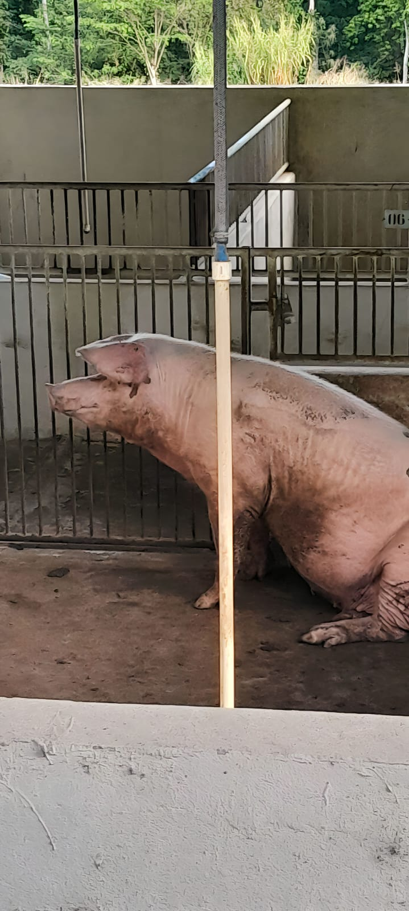
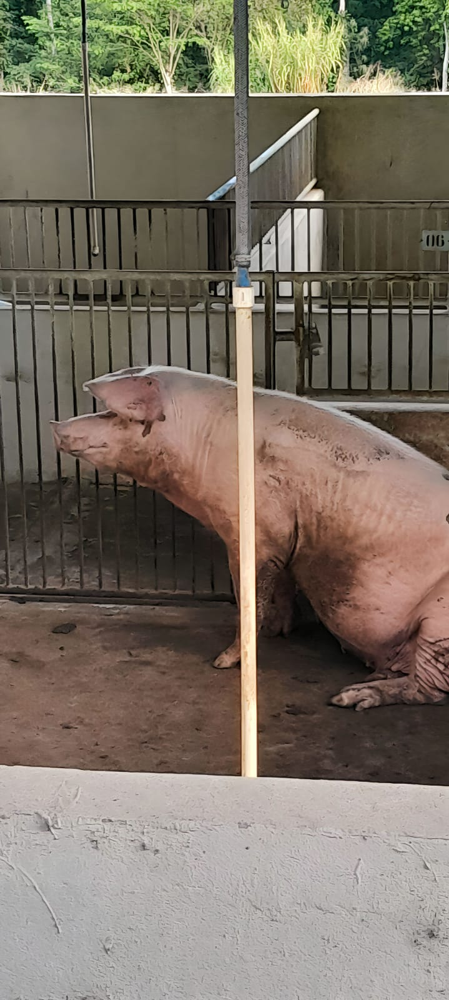
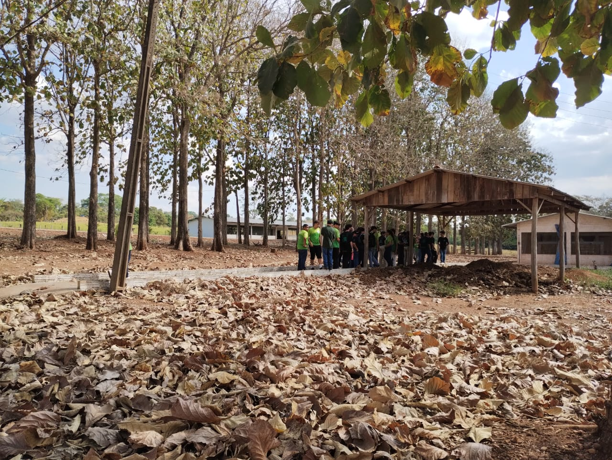
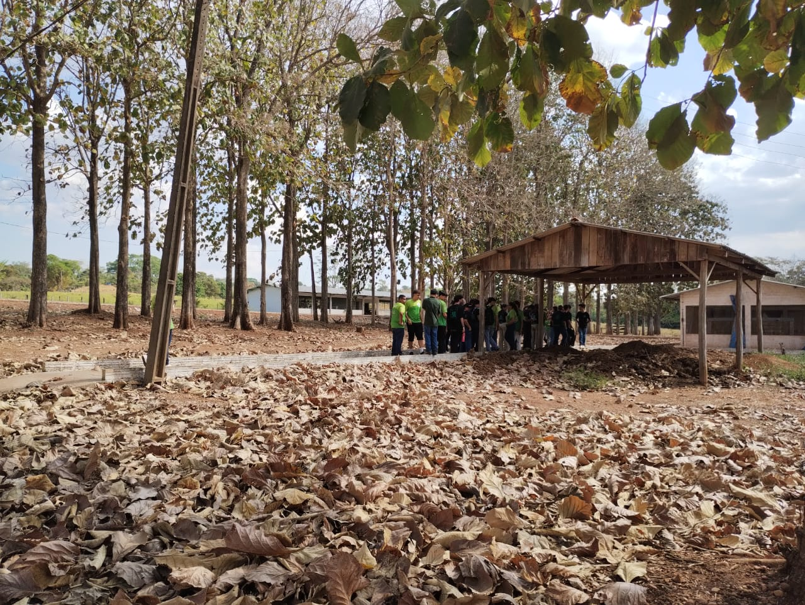

Relatório de Visita Técnica ao IFRO - Campus Colorado do Oeste
Introdução:
A visita técnica realizada ao Instituto Federal de Educação, Ciência e Tecnologia de Rondônia (IFRO) - Campus Colorado do Oeste teve como objetivo proporcionar uma experiência enriquecedora aos participantes,
nos levando a conhecer o dia a dia dos alunos e professores da instituição, explicações sobre execução de atividades e métodos de criação e agricultura.
Atividades Desenvolvidas:
Chegada e almoço:
Logo em nossa chegada fomos levados para o mini-auditório para nos apresentarmos. O segundo momento logo após nossa chegada foi deixado livre para passearmos pelo campus sem muita rota, podendo conversar com o pessoal e interagir a vontade pelo campus.
Apresentação de Projetos de integrantes do campus:
Nos deixaram cientes de muitos projetos executados por integrantes de dentro do campus, como o projeto de silagem, o projeto de judô que continha uma história incrível e até mesmo a criação do app Ifro Mobile, que muitos alunos em todos os campis usam.
Hortaliças Cultivadas no Campus:
A terceira atividade foi realizada no setor de horticultura do campus, onde nos foram apresentados o método de cultivo em hidroponia.
Foram explicados os princípios da hidroponia, que permite o cultivo de plantas sem solo, utilizando uma solução nutritiva.
Os visitantes puderam observar as hortaliças em crescimento e compreender os benefícios desse método, como a economia de água e o controle mais preciso dos nutrientes.
Conclusão:
A visita técnica ao IFRO - Campus Colorado do Oeste ofereceu uma experiência abrangente e enriquecedora aos participantes.
Desde a apresentação dos projetos até a visita às criações de animais e a exploração do campus, os participantes tiveram a oportunidade de vivenciar a teoria em prática e conhecer as instalações educacionais.
A atividade de cultivo em hidroponia trouxe uma compreensão mais profunda sobre métodos de cultivo sustentáveis e tecnológicos,
enquanto a exploração do campus permitiu visualizar a infraestrutura que apoia a educação e o desenvolvimento dos alunos.
Agradecimentos:
Agradecemos ao IFRO - Campus Colorado do Oeste por receber nossa visita e proporcionar uma experiência tão enriquecedora.
Agradecemos também aos alunos e aos professores que nos guiaram e compartilharam seu conhecimento conosco, tornando essa visita memorável e inspiradora.
 



 
